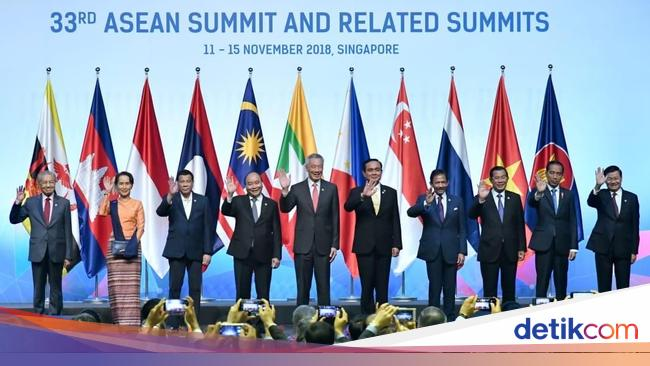
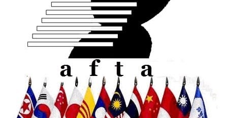

KERJASAMA REGIONAL: AFTA
Yuk, Simak baik-baik!
- ASEAN Free Trade Area (AFTA) adalah sebuah inisiatif yang dibentuk oleh negara-negara anggota ASEAN untuk menciptakan kawasan perdagangan yang bebas dari tarif dan hambatan lainnya. Dikenalkan pada tahun 1992, AFTA bertujuan untuk meningkatkan perdagangan antarnegara anggota dengan cara mengurangi atau menghapus tarif impor barang. Dengan adanya AFTA, diharapkan barang-barang dari negara anggota ASEAN bisa lebih mudah diakses dan lebih terjangkau, sehingga meningkatkan pertumbuhan ekonomi di kawasan Asia Tenggara.
- Salah satu tujuan utama AFTA adalah untuk meningkatkan daya saing negara-negara anggota ASEAN di pasar global. Dengan mengurangi biaya perdagangan, negara-negara anggota dapat memproduksi barang dengan lebih efisien dan menjualnya dengan harga yang lebih kompetitif. Selain itu, AFTA juga mendorong investasi antarnegara anggota, yang pada gilirannya akan menciptakan lebih banyak lapangan kerja dan meningkatkan kesejahteraan masyarakat. Negara-negara anggota juga bekerja sama dalam pengembangan industri dan sektor-sektor tertentu untuk memperkuat ekonomi regional.
- Indonesia memiliki peran penting dalam AFTA, sebagai salah satu negara pendiri dan anggota terbesar. Indonesia aktif terlibat dalam pembahasan dan implementasi kebijakan AFTA, serta berkontribusi pada pengembangan infrastruktur yang mendukung perdagangan. Sebagai contoh, Indonesia meningkatkan pelabuhan dan fasilitas transportasi untuk memudahkan arus barang antarnegara anggota. Selain itu, Indonesia juga mempromosikan produk lokalnya di pasar ASEAN, sehingga dapat bersaing dengan produk dari negara lain. Melalui peran ini, Indonesia tidak hanya berusaha untuk mendapatkan manfaat dari AFTA, tetapi juga membantu negara-negara lain di kawasan untuk tumbuh dan berkembang bersama.
 